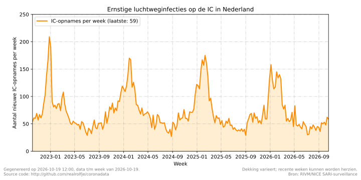

🔍 Ernstige luchtweginfecties op de IC in Nederland

De grafiek toont per week het aantal volwassen patiënten dat met een ernstige acute luchtweginfectie (SARI) op een Nederlandse intensive care is opgenomen. Hieronder vallen onder meer COVID-19, influenza, RSV, longontsteking en sepsis met longontsteking.
Dit zijn nieuwe opnames per week, niet het aantal bezette IC-bedden. De reeks is daardoor niet rechtstreeks vergelijkbaar met de historische COVID-19-bezettingsgrafiek. De dekking hangt af van het aantal deelnemende IC-afdelingen en vooral de recentste acht weken kunnen achteraf worden aangevuld of herzien.
Bron: RIVM/NICE SARI-surveillance. De afgesloten COVID-19-bezettingsreeks staat in het archief.